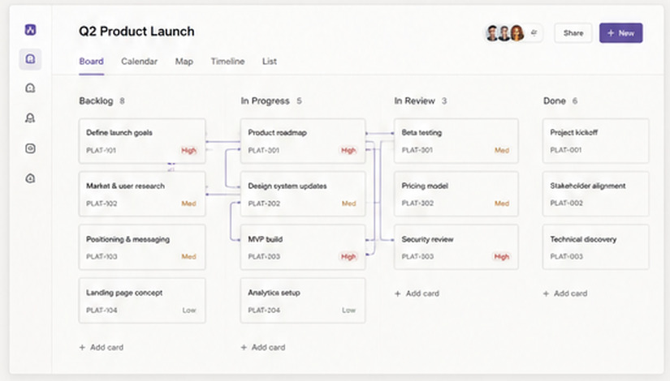
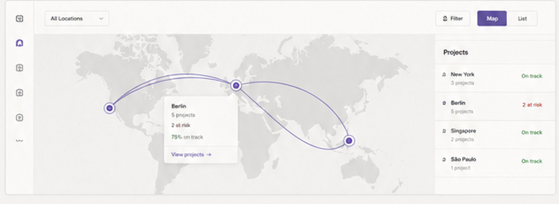
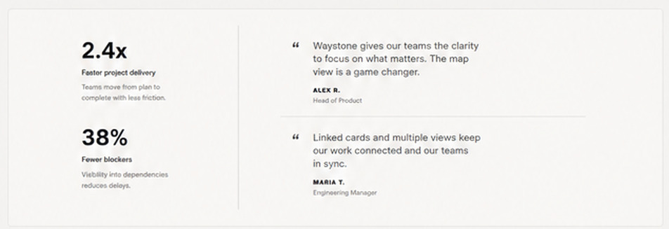

All work, one place
Boards, lists and milestones stay together.
Software / Waystone
A connected project workspace for boards, linked work and visual flows—built to make the path forward easier to understand.
Explore Waystone
Boards, lists and milestones stay together.
Link related cards and reveal dependencies.
Keep the interface clear and reduce context switching.
See progress and understand what comes next.
How it works
Waystone combines familiar board-based planning with connections and map views that reveal the structure underneath the work.
Add ideas and tasks.
Link related work.
Use views that fit the project.
Track progress through the flow.
Map view
The map turns linked cards into a visual route, making dependencies, branches and milestones easier to understand.

Development
Waystone is an active project. Board workflows, saved views, filters and visual connections continue to evolve together.
